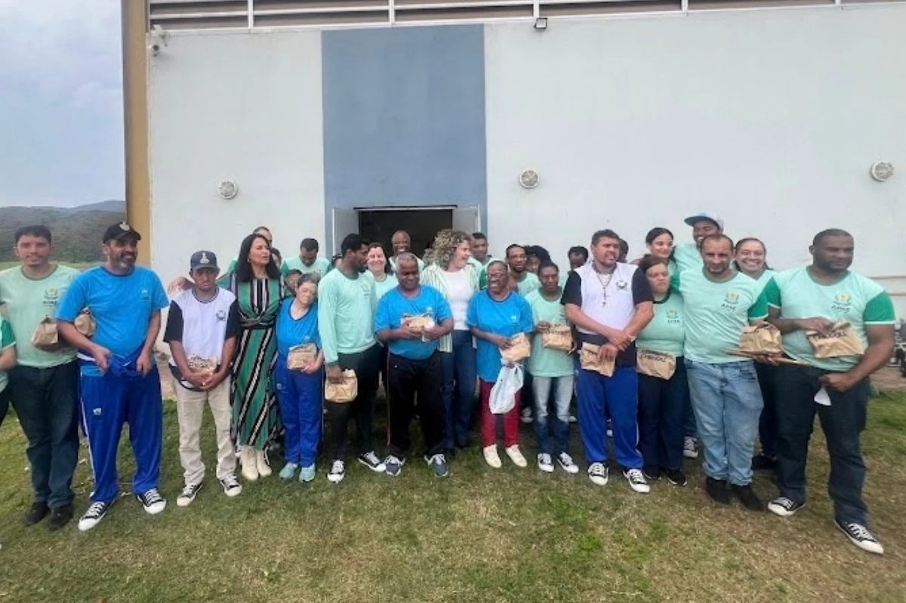
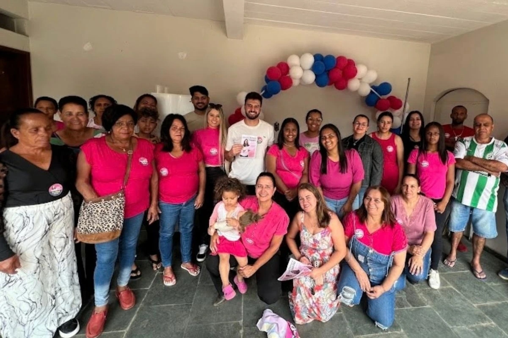

Perguntas frequentes
Informações claras sobre a trajetória, as propostas, o mandato e a forma de atuação de Lílian França.
Sobre Lílian França
01Quem é Lílian França?+
Lílian França é vereadora reeleita de Ouro Preto e candidata a deputada estadual por Minas Gerais. Seu número é 11000, pelo Progressistas. Mora há mais de 30 anos em Amarantina, Ouro Preto, e atua em causas sociais desde os 16 anos.
02Qual é a trajetória de Lílian França?+
A trajetória começa no trabalho comunitário. Lílian criou o Projeto Semeando Cidadania em 2017, elegeu-se vereadora em 2020 e foi reeleita em 2024.
03Lílian França já foi deputada estadual antes?+
Não. Esta é sua primeira candidatura ao cargo de deputada estadual. Atualmente, ela está em seu segundo mandato como vereadora de Ouro Preto.
04O que é o Projeto Semeando Cidadania?+
É uma iniciativa de ações itinerantes nas comunidades de Ouro Preto, criada em 2017. Leva informação, escuta demandas e aproxima moradores dos serviços disponíveis.
Sobre a candidatura
05Qual é o número de Lílian França para deputada estadual?+
O número é 11000, pelo Progressistas.
06Quais são os 11 compromissos de Lílian França?+
São: Minas mulheres digitais; Proteção sem barreiras; Minas inclusiva em um só lugar; Escola pronta para incluir; Mapa animal MG; Recurso que chega à causa animal; Patrimônio vivo, renda local; Distritos conectados; Estradas com prioridade pública; Segurança que recupera; e Minas começa nos municípios.
Baixe os 11 compromissos completos ↗
07A candidatura promete algo que o cargo não pode cumprir?+
Não. Cada compromisso foi pensado dentro das atribuições reais de uma deputada estadual: legislar, fiscalizar, atuar no orçamento e articular soluções.
Sobre o cargo
08O que faz uma deputada estadual?+
Cria e vota leis estaduais, fiscaliza o Governo de Minas, participa da definição do orçamento, apresenta emendas e realiza audiências públicas.
Entenda as funções do cargo ↗
09O que uma deputada estadual não pode fazer?+
Não administra secretarias, não executa obras diretamente e não determina ações do Executivo. Sua função é legislar, fiscalizar e articular.

10Qual a diferença entre vereadora e deputada estadual?+
A vereadora atua no município, votando leis e fiscalizando a prefeitura. A deputada estadual atua no âmbito do estado, afetando todos os municípios de Minas Gerais.
Propostas e atuação
11Quais propostas Lílian França tem para as mulheres?+
Propõe Minas mulheres digitais, com capacitação conectada a oportunidades reais, e Proteção sem barreiras, para que a rede de proteção também alcance mulheres com deficiência ou necessidades de comunicação.
12Quais propostas Lílian França tem para inclusão?+
Propõe Minas inclusiva em um só lugar e Escola pronta para incluir, com informação acessível e acompanhamento da inclusão na sala de aula.
13Quais propostas Lílian França tem para causa animal?+
Propõe o Mapa animal MG e uma rota anual e transparente de recursos para ações de proteção animal.
14Quais propostas Lílian França tem para desenvolvimento regional?+
Propõe Patrimônio vivo, renda local e Distritos conectados, ampliando conectividade e oportunidades nos municípios.
15Quais propostas Lílian França tem para segurança e mobilidade?+
Propõe Estradas com prioridade pública e Segurança que recupera, com planejamento, transparência e fortalecimento da ressocialização.
Resultados e transparência
16Quais resultados Lílian França já entregou como vereadora?+
Atuou na aprovação de leis municipais relacionadas à inclusão, saúde da mulher e proteção animal, além de articular recursos para projetos em Ouro Preto.
Ver publicações oficiais ↗
17Como enviar uma pauta ou demanda para Lílian França?+
Fale pelo WhatsApp oficial da campanha: (31) 99614-3100.
Falar com Lílian no WhatsApp ↗
18Como participar da campanha?+
Acompanhe @vereadoralilianfranca no Instagram e envie sugestões pelo WhatsApp.
Seguir no Instagram ↗
